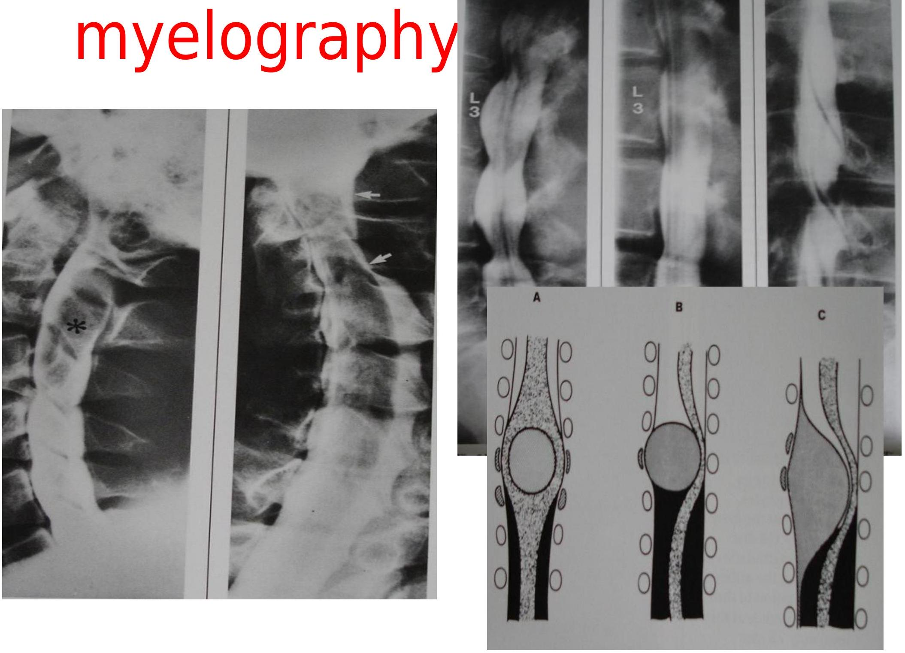
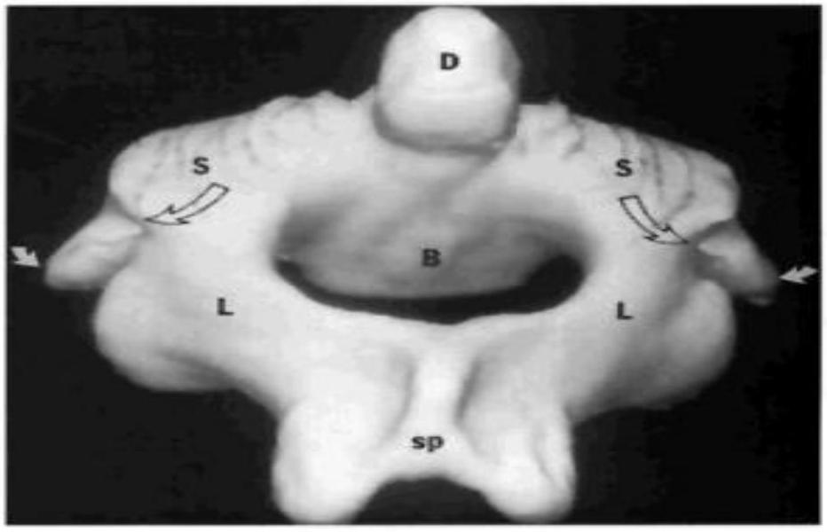
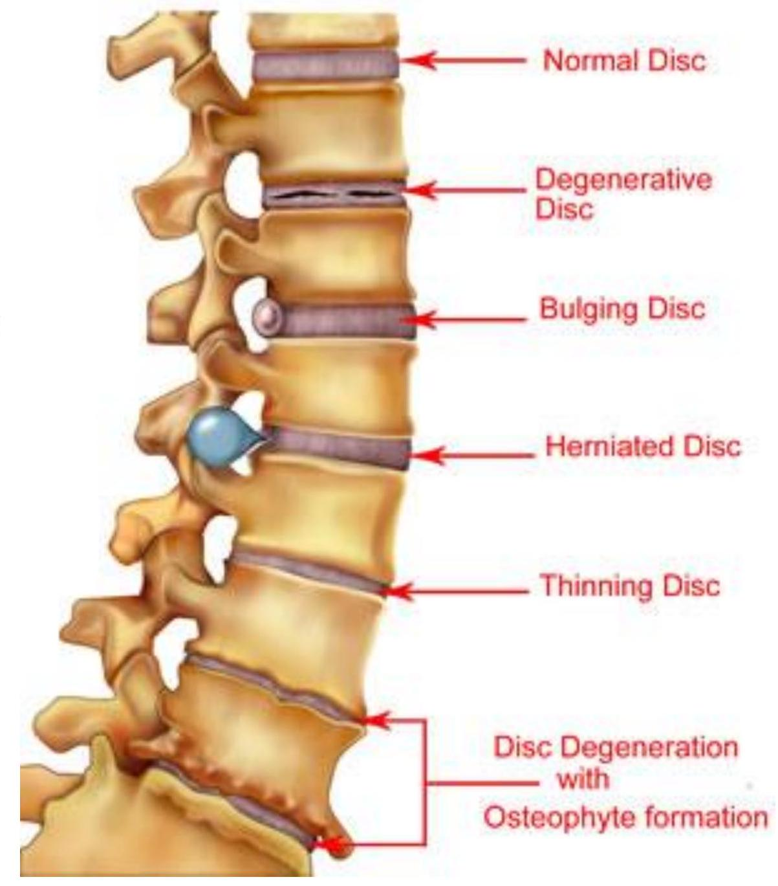
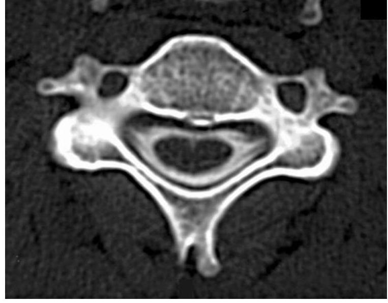
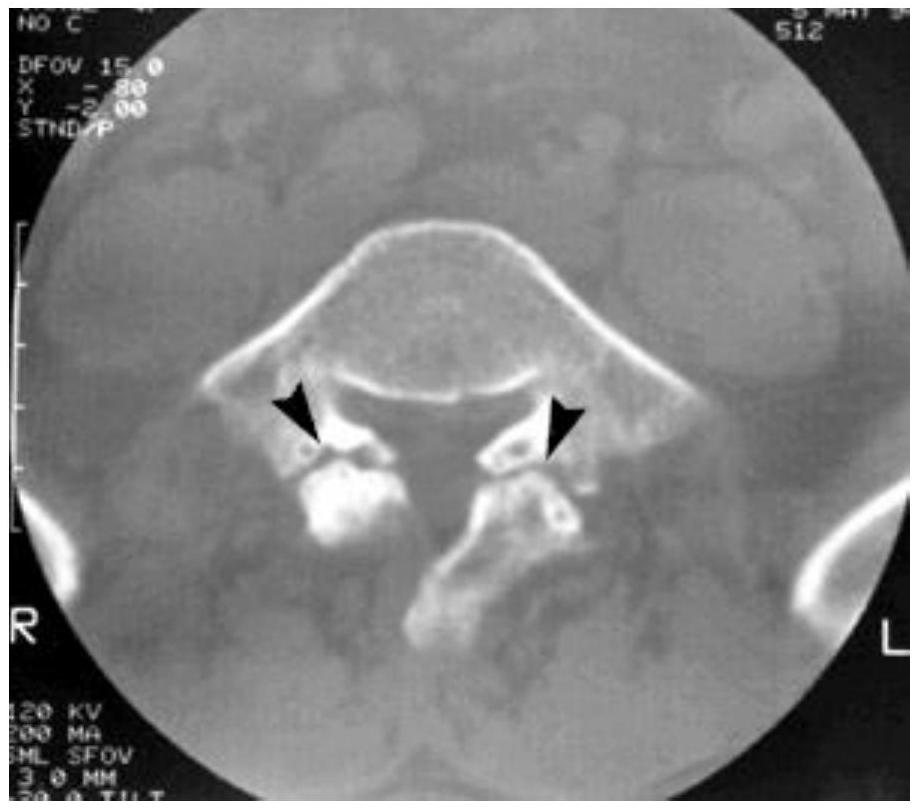

IMAGING OF THE SPINE AND SPINAL CORD
Dr N.M. Kimani Lecturer DIRM
Level 4: 15th Dec 2016
SPINE/SPINAL CORD Functions
- Protection of spinal canal
- Weight bearing
- Motion
Anatomy
- Vertebrae---24 vertebrae
- Facet joints, discs and ligaments.
Why Image?
- Trauma
- Degenerative disease
- Disc herniation
- Spinal stenosis
- Inflammatory diseases
- Spinal tumours
- Congenital spinal malformation.
- Spinal vascular abnormalities.
Modalities
- Plain radiography
- Computerized tomography
- Myelography
- Magnetic resonance
- Radionuclide imaging
- Ultrasonography
- Miscellaneous -discography
Plain Film (X-Ray)
- Most important in spinal trauma
- -Available in any hospital
- -Can be performed without moving the patient
- -Gives best information about dislocation.
- - Important structures such as facet joints in the cervical spine are well shown.
- Can be performed in provocation allowing
Trauma
- Traumatic lesions differ on the kind and extent of trauma
- Distinction is drawn from spinal fractures with and without neurological features -important for therapy
-
Spinal cord injury
- concussion
- Spinal contusion
- Torn spinal cord
- Fractures and dislocations with /without neurological symptoms
-
Hemorrhage
- epidural
- subdural (rare)
- Root avulsion injury .
Tumors
-
Plain film radiograph
- Osteogenic sarcoma
- sunburst tumor
- soft tissue mass
MYELOGRAPHY

C1/C2 Puncture

Myelograph C1/C2 Puncture
Computerized Tomography(CT)
- Gives valuable additional inform film.
- special value in identification of
- Identification of fractures with bone fragments in the spinal canal.
- Gives best informative ligamentous tears and
CT Myelogram-Normal
- Digital x-ray of the spine -A, B

Traumatic Spondylosis
- Hangman's fracture of C2
- Anterior displacement of C1-C2 body complex
- Axial NECT show the fracture extends thro the pedicle and inferior C2 body
CT Reformats
-
Degenerative Disc Disease
- Loss of disc height
- Vacuum phenomena
- Osteonhvtes
- A CT scan-degenerative changes
- B subtle prevertebral soft tissue swelling
- C. MR prevertebral effusion spinal cord signal abmormality
Magnetic Resonance Image
-
Gives additional information about soft tissue:
- cord contusion
- traumatic disc herniations.
- Evaluation of post traumatic changes e.g. cyst formation.
- Non-invasive
- gives details about bone marrow
- Metastases
- Cord compression
- Post contrast T1,T2wi MR Enhancing well demarcated intradural mass mid thoracic spine
- Typical meningioma
- Tethered cord
Spinal Trauma Images
- A) Plain radiograph -Wedge fracture of C5
- B) T1WI -compression fracture of C5 (arrow head) C6 slightly wedged -C5, C6 vertebral bodies show low signal intensity (bone marrow edema)
- C)T2Wi cervical spine - Anterior compression fracture of C5 -Prevertebral swelling (open arrows) -Spinal cord edema -bone marrow edema- hyper intensities of vertebral bodies C5 C6
- D) T1WI midline sagittal -slight anterior displacement of C4 on C5 -anterior disc herniation -disruption of anterior longitudinal ligament (arrow head)
Trans Axial CT
- Fracture of anterior and posterior arches of C1 -variation of Jefferson fracture
Thoracic Spine
- Thoracic spine stabilized by rid cage, musculature, and steeply oriented facet joints.
- -#s uncommon ,occur in severe trauma -CT valuable
-
Thoracic spine compression #
- A) axial CT -compression # involving the anterior aspect of T7 -posterior margin of the body appears intact
- B) T1WI of same patient -wedged T7 -posterior margin displaced producing spinal cord compression
- Poe - Plain film evaluation difficult due to superimposition of shoulder girdle, ribs
Lumbar Spine
T1WI
- Facet joint separated Inhomogeneous marrow signal L1
T2WI
- Disruption of posterior ligament complex
- Widening of Interspinous space
- Disruption of the Interspinous ligament(long arrows)
- Wedging of L1
T2WI Sagittal
- Fracture/dislocation with posterior displacement of L1 on T12
- Interspinous hematoma (h)
- Total disc disruption
- compression of cauda aquina (arrow heads)
- Edema of conus medullaris (open arrow)

Infections
A. T1WI
- L4/L5 discitis osteomyelitis(staphylococcus) - Low signal L4,L5 -Indistinct inferior L4 and superior L5 end plates -Hypo intense L4/L5 disc
B. Spin Echo T2WI
- High signal intensity L4/L5 disc .
- High signal intensity epidural abscess (small arrow)
C. T1WI With Contrast
- Enhancement of L4,L5 bodies
D. Epidural Abscess At C7-T1
- High signal intensity of T1
- Intact disc
E. Axial T1WI
- Abscess.
Axial CT
- TB affecting L1
- destruction of rt side of vertebral body
- extension of abscess into rt psoas muscle and Prevertebral space.
- Erosion of posterior aspect of vertebral body
- Extension of infection into the epidural space
- compression of the thecal sac
Degenerative Disease
- Disc
- Spondylosis
- Spondylolisthesis /spondylosis
- Facet joint disease
- Spinal stenosis.
SPINE CONDITIONS
 DISC HERNIATION
- CT myelogram. -Herniated disc H -contrast filled thecal sac indented by the herniated disc -S1 Nerve root compressed
- T1WI -Right raminal/extraforaminal disc herniation at L4/L5
T1WI
- Mid sagittal -large herniated disc at C4C5
- No significant indentation of the spinal cord
D.CT Myelogram Thoracic Spine
- partially calcified disc
Spondylolisthesis and Spondylolysis
- Displacement of a vertebra in relation to an adjacent vertebra
- Malalignment of the spinal column
- Can be; -anterior-anterolisthesis -posterior-retrolisthesis
- Can result from -trauma, -congenital or acquired fibrous defect of the pars interarticularis
Axial CT At L5
Bilateral lucent defects(arrowheads) involving the pars interarticularis
Facet Joint Disease
Synovial Cyst
- axial CT I4/5 - mass compressing the thecal sac -degenerated left facet joint -gas in the facet joint
- Post contrast T1WI axial -cyst with peripheral enhancement =>? granulation tissue
- Mid sagittal T1WI (contrast) - cyst surrounded by enhancing granulation tissue
Spinal Stenosis
- A & B
Ossified posterior longitudinal ligamer (OPLL) on CT , MR
- Sagittal T2W MR -ossified PLL C2-C7 -spinal stenosis at C3/A and C6/7
- Axial CT ✓ - heavily calcified ligamentum flavum (F) ✓-significant narrowing of the spinal canal
Tumors and Tumor Like Lesions
T1WI bone marrow appearances areas of low signal-bone trabeculae
-
Haemangioma
- 10% of all autopsies
- predominantly in women
- thoracic/lumbar regions
- CT-low attenuation with thick bone striations (polka dot pattern)
- -no cortical bone destruction
- -calcification of soft tissue extension
Rt Parasagittal T1Wi Showing The Haemangioma
Aneurysmal Bone Cyst
- axial CT L4 - erosion of vertebral body, pedicle, transverse process. -blood/fluid levels - Well defined margins
Secondary Tumors (Mets)
- Axial CT Bone window -Sclerotic mets from bronchogenic carcinoid -narrowed spinal canal
- Breast metastasis T1WI - multiple areas of low signal intensity in the bone marrow - spinal cord is normal
- MR T1WI -Breast cancer mets mid thoracic vertebra(B) -Involvement of posterior elements (P) - -spinal cord compression(arrow) by tumor
THE END